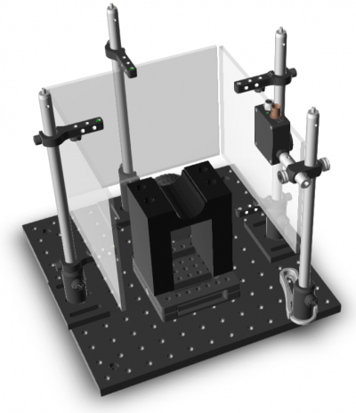

Burgess steering wheel task
Our laboratory developed a steering wheel setup to probe mouse behavior(1). In this setup, a mouse turns a steering wheel with its front paws to indicate whether a visual stimulus appears to its left or to its right.
This setup is being adopted in multiple laboratories, from Stanford to Tokyo, and is being deployed by the International Brain Laboratory.
To facilitate this deployment, we provide instructions to build the setup with components that are entirely off-the-shelf or 3-D printed. You can find the hardware setup instructions here.

Contents
Introduction
This document gives instructions on how to build a basic version of the steering wheel setup to probe mouse behavior, introduced by Burgess et al. The goal is to make it easy for other laboratories, including those that make the International Brain Laboratory, to replicate the task and extend it in various directions. To this end, these instructions rely entirely on materials that can be bought off the shelf, or ordered online based on 3-D drawings. In this steering wheel setup, we place a steering wheel under the front paws of a head-fixed mouse, and we couple the wheel's rotation to the horizontal position of a visual stimulus on the screens. Turning the wheel left or right moves the stimulus left or right. The mouse is then trained to decide whether a stimulus appears on its left or its right. Using the wheel, the mouse indicates its choice by moving the stimulus to the center. A correct decision is rewarded with a drop of water and short intertrial interval, while an incorrect decision is penalized with a longer timeout and auditory noise. We use this setup throughout our laboratory, and deploy it in training rigs and experimental rigs. Training rigs are used to train head-fixed mice on the steering-wheel task and acquire behavioral data. Experimental rigs have additional apparatus to collect electrophysiological and imaging data, measure eye movements and licking activity, provide optogenetic perturbations, and so on. Up until recently, constructing these setups required a machine shop that could provide custom-made components. However, for the purposes of spreading this setup to other laboratories, we here describe a new version that does not require a machine shop: all components can be ordered online or 3D-printed.
Installing Rigbox
Before configuring the settings, please follow the installation instructions to install Rigbox and its dependencies.
Setup
Follow teh setting up dat.paths guide to set up rig paths. This sets the location of the data repositories and hardware settings files.
The below code will create a hardware settings file for the Burgess wheel task. For details of what the code does, or to customize the hardware, see the hardware config guide. *NB*: The below code must be run on the stimulus computer.
hardware = fullfile(getOr(dat.paths, 'rigConfig'), 'hardware.mat');
Window
stimWindow = hw.ptb.Window; % This setting assumes the stimulus monitors are the primary screen (i.e. % the Windows menu bar is shown on these monitors. stimWindow.ScreenNum = 0; stimWindow.positionSyncRegion('NorthEast', 100, 100) stimWindow.PxDepth = Screen('PixelSize', stimWindow.ScreenNum); stimWindow.BackgroundColour = 127*[1 1 1]; stimWindow.MonitorId = 'LG LP097QX1'; % The screens used in Burgess et al. save(hardware, 'stimWindow') % Save the stimWindow to file
Viewing model
First define some physical dimentions in cm:
screenDimsCm = [19.6 14.7]; %[width_cm heigh_cm], each screen is the same centerPt = [0, 0, 9.5] % [x, y, z], observer position in cm. z = dist from screen centerPt(2,:) = [0, 0, 10]% Middle screen, observer slightly further back centerPt(3,:) = centerPt; % Observer equidistant from left and right motitors angle = [-90; 0; 90]; % The angle of the screen relative to the observer % Define the pixel dimentions for the monitors r = Screen('Resolution', stimWindow.ScreenNum) % Returns the current resolution pxW = r.width; % e.g. 1280 pxH = r.height; % e.g. 1024 % Plug these values into the screens function: screens(1) = vis.screen(centerPt(1,:), angle(1), screenDimsCm, [0 0 pxW pxH]); % left screen screens(2) = vis.screen(centerPt(2,:), angle(2), screenDimsCm, [pxW 0 2*pxW pxH]); % ahead screen screens(3) = vis.screen(centerPt(3,:), angle(3), screenDimsCm, [2*pxW 0 3*pxW pxH]); % right screen save(hardware, 'screens', '-append');
Inputs
mouseInput = hw.DaqRotaryEncoder; save(hardware, 'mouseInput', '-append')
Outputs
daqController = hw.DaqController; % Add a new channel daqController.ChannelNames = {'rewardValve'}; % Define the channel ID to output on daqController.DaqChannelIds = {'ai0'}; % Add a signal generator that will return the correct samples for % delivering a reward of a specified volume daqController.SignalGenerators(1) = hw.RewardValveControl; % Save your hardware file save(hardware, 'daqController', '-append');
Timeline
Timeline will be off by default
timeline = hw.Timeline timeline.UseTimeline = False; % Save your hardware.mat file save(hardware, 'timeline', '-append')
Scale
Assumes the scale model 'ES-300HA' connected on COM1
scale = hw.WeighingScale save(hardware, 'scale', '-append')
Audio
This function plays white noise through all channels for 2 seconds, for each available output device. The lowest latency devices are selected first. Press the space bar when you hear noise coming through your speakers and the current device will be saved into your hardware file. Press any other key to proceed to the next device.
hw.testAudioOutputDevices('SaveAsDefault', true);
Websockets
The stimulus controllers are loaded from a MAT file with the name 'remote' in the globalConfig directory, defined in dat.paths:
p = fullfile(getOr(dat.paths, 'globalConfig'), 'remote.mat'); % Let's create a new stimulus controller name = ipaddress(hostname); stimulusControllers = srv.StimulusControl.create(name); % Save your new configuration save(p, 'stimulusControllers')
Calibrations
Once the hardware file has been set up, you can start the experiment server by running srv.expServer. A grey Psychtoolbox window should appear on the three screens.
To calibrate the screens, press the g key and follow the steps. To calibrate the reward valve, ensure you have a set of scales connected to the computer (to the port set above in the previous section) and place them below the water spout. Place a container on the scales to collect the water. Press the c key to start the calibration.
Notes
(1) DOI:10.1016/j.celrep.2017.08.047
Etc.
Authors: Lauren E Wool, Miles Wells, Hamish Forrest, and Matteo Carandini v1.1.2
%#ok<*NOPTS> %#ok<*NASGU> %#ok<*ASGLU>